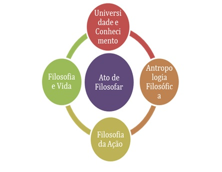
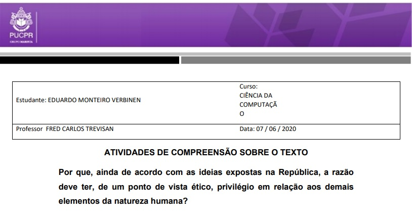
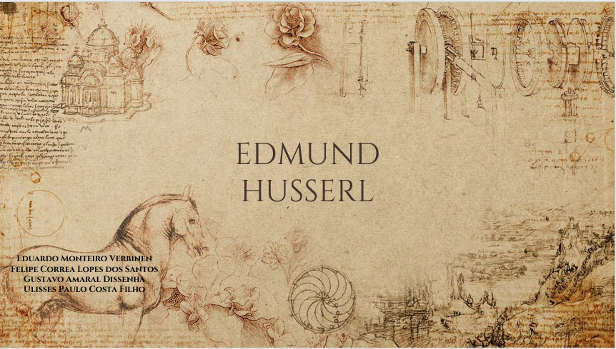
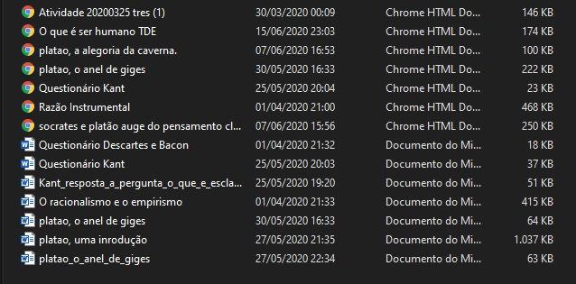

Filosofia
|
Ministrado por Me. Fred Carlos Trevisan, esta disciplina, dirigida a acadêmicos/as de todos os cursos da universidade, visa o ato de filosofar, a partir da noção do conhecimento enquanto processo construído sócio-historicamente. Nela, os estudantes refletem criticamente sobre elementos antropológico-filosóficos da condição humana. Ao final, são capazes de planejar seu percurso pessoal-acadêmico, ante situações-problema pertinentes à sociedade contemporânea, em prol de novas possibilidades individuais e coletivas de ser no mundo. |
 |
|
Projetos Realizados |
|
|  |
O projeto mais importante proposto foi o Trabalho Discente Efetivo, a respeito do tema Antropologia filosófica: O que é o ser humano?. Nessa atividade, tivemos de compreender uma passagem do livro República de Platão para que fosse possível realizar a atividade. O texto em questão é um diálogo entre Glauco e Sócrates, onde a partir do parágrafo 579e do livro II, Sócrates apresenta a Glauco três tipos de homem e pergunta qual deles seria o mais feliz: o governado pela razão, aquele que é dominado pelo desejo de glória ou o que é dirigido pela ambição de riqueza. Apesar de Sócrates concluir que o homem mais feliz será aquele em que a razão predomina, o mais interessante não é a conclusão do diálogo, mas toda reflexão que ele suscita em nós. |
|
Fizemos um projeto cuja ideia era escolher um filósofo que tivesse ideias e pensamentos sobre o conhecimento e então realizar um seminário a respeito da pessoa escolhida. Meu grupo era composto pelos colegas Felipe Correa, Gustavo Dissenha e Ulisses Filho. Escolhemos o Filósofo Edmund Husserl pois sua ideia principal diz respeito à fenomenologia, ramo contemporâneo da filosofia que tenta entender problemas como os quais estão no entendimento do ser humano sobre o mundo. |
 |
|  |
A imagem à esquerda simboliza as atividades gerais realizadas durante o semestre letivo. Devido à pandemia do COVID-19, nossas aulas tiveras de ser ministradas à distância, e a cada semana de aula, o professor passava uma atividade correspondênte à temática da aula. Os textos à serem lidos para a compreensão da atividade eram longos, mas proporcionaram reflexões interessantes, poderia até dizer que fiquei um passo mais perto do esclarecimento, como dizia Kant. |
Copyright © 2020 by Eduardo Verbinen